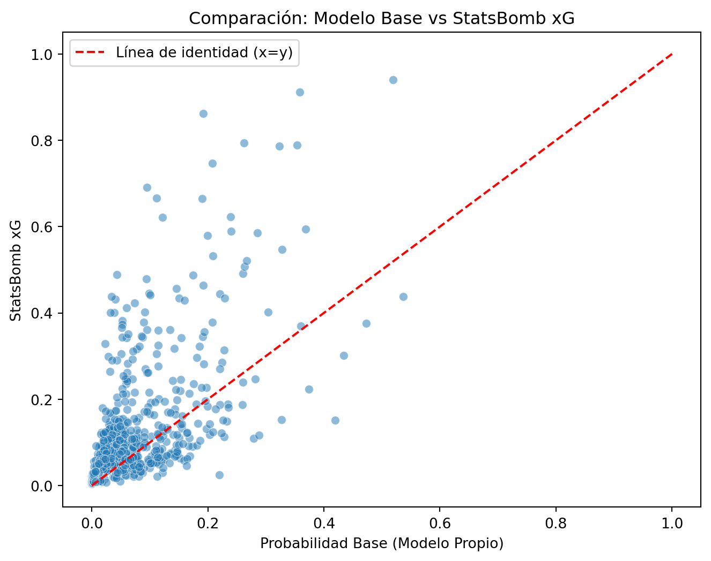

En este capítulo, el objetivo reside en el cálculo de métricas sobre el contexto de los tiros basados en la posición de disparo y el contexto de la jugada a través del 360. A través de estas métricas, se define un sencillo modelo en el que se optimizan sus parámetros con el objetivo de ser lo más parecido posible a un modelo de xG.
Una vez tenemos nuestro propio modelo de xG, podremos calcular, para cualquier posición del campo y contexto de jugadores, la probabilidad de meter gol. Con esta característica, seremos capaces de calcular, para cada tiro, si hacer un pase a otro compañero era mejor opción en términos de mejora de la probabilidad de gol en nuestro modelo. Se trabajará de forma análoga para los pases previos a un tiro. Se calculará la probabilidad de gol desde el punto donde llegó el pase, y se comparará con la probabilidad si se hubiera pasado a cualquier otro compañero.
3.1 Configuración del entorno y carga de datos.
El primer paso para establecer nuestro motor de cálculo es inicializar el entorno de trabajo. Para ello, importamos las librerías fundamentales para la manipulación estructurada de datos y la ejecución de operaciones vectoriales optimizadas. Asimismo, incluimos los módulos matemáticos estándar que nos permitirán aplicar cálculos trigonométricos sobre el plano bidimensional del terreno de juego.
Una vez configurado el entorno, ingerimos los conjuntos de datos en formato optimizado (.parquet) que consolidamos durante la ingesta previa, garantizando que disponemos de la muestra exacta de acciones dinámicas en “Open Play” acompañadas de su contexto espacial (Freeze Frames).
Ver código
import pandas as pdimport numpy as npimport mathfrom pathlib import Pathimport astimport matplotlib.pyplot as pltimport seaborn as snsfrom sklearn.metrics import r2_scorePATH_PROCESSED = Path("../data/processed")df_shots = pd.read_parquet(PATH_PROCESSED /"shots_360_analysis.parquet")df_passes = pd.read_parquet(PATH_PROCESSED /"shots_pass_360_analysis.parquet")def parse_spatial_data(val):""" Convierte representaciones en string de listas y diccionarios a sus tipos nativos de Python de forma segura. """if pd.isna(val):return valifisinstance(val, str):try:return ast.literal_eval(val)except (ValueError, SyntaxError):return valreturn valespaciales_shots = ['location', 'shot_end_location', 'visible_area', 'freeze_frame']for col in espaciales_shots:if col in df_shots.columns: df_shots[col] = df_shots[col].apply(parse_spatial_data)espaciales_secuencias = ['location_pass', 'pass_end_location_pass', 'visible_area_360_pass', 'freeze_frame_360_pass','location_shot', 'shot_end_location_shot', 'visible_area_360_shot', 'freeze_frame_360_shot']for col in espaciales_secuencias:if col in df_passes.columns: df_passes[col] = df_passes[col].apply(parse_spatial_data)del col, espaciales_secuencias, espaciales_shots, PATH_PROCESSED, parse_spatial_data
3.2 Definición del campo y constantes geométricas.
Para realizar el modelado matemático de las trayectorias de los disparos y los pases, es fundamental anclar nuestro sistema sobre las coordenadas estándar proporcionadas por la especificación oficial de StatsBomb.El terreno de juego se define en un plano bidimensional continuo cuyas dimensiones abarcan desde 0 hasta 120 metros en el eje X (longitud) y desde 0 hasta 80 metros en el eje Y (anchura). De acuerdo con la estructuración geométrica del dato espacial, los eventos siempre se orientan asumiendo que el equipo atacante progresa del valor mínimo al valor máximo del eje X. Por consiguiente, nuestro objetivo a batir siempre se situará sobre la línea de fondo \(x = 120\).
Con base en la ubicación de los postes, abstraeremos los elementos clave del campo utilizando la siguiente formalización matemática:
Poste izquierdo: \(P_{izq} = (120, 36)\)
Poste derecho: \(P_{der} = (120, 44)\)
Centro de la portería: Obtenido mediante el punto medio de los postes, estableciendo \(P_{cen} = (120, 40)\).- Volumen de oclusión (\(r\)): Para proyectar la oclusión espacial, modelaremos la silueta física de cada jugador dentro del Freeze Frame como un cuerpo circular con un radio \(r = 0.5\) metros.
A continuación, inicializamos estas coordenadas y métricas de contorno como variables constantes (en mayúsculas por convención) para su consumo posterior en los algoritmos de probabilidad.
Una vez creadas las variables de referencia del terreno de juego, el siguiente paso de la metodología consiste en la creación de métricas tácticas explicativas sobre la posición de disparo. Aprovechando la posición desde la que se golpea y el contexto 360 de ese momento, vamos a extraer cuatro métricas para cada posible disparo desde una posición determinada del campo.
3.3.1 Distancia al centro de la portería
La distancia al objetivo es, históricamente, la variable de mayor peso en cualquier modelo de probabilidad de éxito. Utilizando el vector location del evento principal, calcularemos la distancia euclidiana exacta entre el origen del disparo (o pase) y nuestra constante central de la portería \(P_{cen} = (120, 40)\). Para un punto de origen \((x, y)\), la distancia \(d\) se define como: \[d = \sqrt{(120 - x)^2 + (40 - y)^2}\]
Implementaremos este cálculo mediante una función modular en Python diseñada para recibir un array genérico de dos posiciones [x, y]. Este enfoque arquitectónico nos permite aplicar el cálculo geométrico tanto sobre la ubicación central del evento, como reutilizar la misma función de manera iterativa sobre las coordenadas individuales de cada jugador presente en los objetos anidados del freeze_frame. De este modo, garantizamos la consistencia matemática a lo largo de todo el análisis espacial.
Ver código
def calcular_distancia_porteria(punto_origen, punto_destino=GOAL_CENTER):""" Calcula la distancia euclidiana desde una coordenada [x, y] hasta un punto objetivo (por defecto, el centro de la portería). Parámetros: - punto_origen: lista o tupla [x, y] con la ubicación a evaluar. - punto_destino: tupla (X, Y) con las coordenadas del objetivo. Retorna: - Distancia en metros (float) o NaN si el punto no es válido. """# Verificamos que el input sea válido y tenga al menos X e Yifnotisinstance(punto_origen, (list, tuple)) orlen(punto_origen) <2:return np.nan x, y = punto_origen[0], punto_origen[1] gx, gy = punto_destino# Cálculo euclidiano puro distancia = math.sqrt((gx - x)**2+ (gy - y)**2)return distancia# Aplicamos la función sobre nuestra variable 'location' del DataFrame de tirosdf_shots['dist_centro_porteria'] = df_shots['location'].apply(calcular_distancia_porteria)df_passes['dist_centro_porteria'] = df_passes['pass_end_location_pass'].apply(calcular_distancia_porteria)print(df_shots[['player_name', 'location', 'dist_centro_porteria']].head(5).to_markdown(index=False))
El ángulo de tiro, o shooting angle, define la amplitud de la “ventana” de gol que el rematador percibe en el momento del impacto. Matemáticamente, este se define como el ángulo formado por dos vectores que parten desde la ubicación del balón \((x, y)\) hacia los dos postes de la portería, situados en las coordenadas \(P_{izq} = (120, 36)\) y \(P_{der} = (120, 44)\).
Una mayor amplitud angular implica una mayor superficie de portería visible y, por tanto, una mayor probabilidad técnica de éxito. Para su cálculo, implementaremos una función que utilice el producto escalar de los vectores directores, obteniendo el ángulo \(\theta\) mediante la siguiente relación: \[\cos(\theta) = \frac{\vec{V_1} \cdot \vec{V_2}}{|\vec{V_1}| \cdot |\vec{V_2}|}\]
Donde \(\vec{V_1}\) y \(\vec{V_2}\) son los vectores desde el balón a los postes izquierdo y derecho, respectivamente.
Ver código
def calcular_angulo_tiro(location):""" Calcula el ángulo de tiro disponible en grados. Parámetros: - location: array [x, y] con la posición del jugador/balón. Retorna: - Ángulo en grados (float). """ifnotisinstance(location, (list, tuple, np.ndarray)) orlen(location) <2:return np.nan x, y = location[0], location[1]# Definir vectores desde el balón a los palos v1 = np.array([GOAL_POST_LEFT[0] - x, GOAL_POST_LEFT[1] - y]) v2 = np.array([GOAL_POST_RIGHT[0] - x, GOAL_POST_RIGHT[1] - y])# Calcular el producto escalar y las magnitudes dot_product = np.dot(v1, v2) norm_v1 = np.linalg.norm(v1) norm_v2 = np.linalg.norm(v2)# Calcular coseno del ángulo y asegurar rango [-1, 1] para arccos cos_theta = np.clip(dot_product / (norm_v1 * norm_v2), -1.0, 1.0)# Obtener ángulo en radianes y convertir a grados angle_rad = np.arccos(cos_theta)return np.degrees(angle_rad)# Aplicación sobre nuestro datasetdf_shots['angulo_tiro'] = df_shots['location'].apply(calcular_angulo_tiro)df_passes['angulo_tiro'] = df_passes['pass_end_location_pass'].apply(calcular_angulo_tiro)print(df_shots[['player_name', 'location', 'dist_centro_porteria', 'angulo_tiro']].head(4).to_markdown(index=False))
3.3.3 Número de jugadores dentro del cono de visión
Para determinar si un jugador rival está bloqueando físicamente el ángulo de tiro, debemos modelar el “cono” como un triángulo cuyos vértices son: la posición del balón en posesión (\(S\)) y los dos postes de la portería, \(P_{izq} = (120, 36)\) y \(P_{der} = (120, 44)\).
Un punto \(P\) (la posición de un rival) se encuentra dentro de este triángulo si cumple simultáneamente las condiciones de orientación respecto a los vectores que definen sus lados. La forma más robusta y eficiente de calcular esto en programación es mediante el producto vectorial en 2D. Para cada vector de lado del triángulo \(\vec{AB}\) y el punto \(P\), el signo del producto vectorial \((B_x - A_x)(P_y - A_y) - (B_y - A_y)(P_x - A_x)\) nos indica si el punto está a la izquierda o a la derecha de la línea \(AB\). Si al realizar esta operación para los tres lados del triángulo (\(SP_{izq}\), \(P_{izq}P_{der}\), y \(P_{der}S\)) los signos son consistentes (todos positivos o todos negativos), el punto \(P\) está contenido dentro del área de visión.A continuación, implementamos la función que procesa el array de diccionarios freeze_frame (que contiene la información de los jugadores en ese instante) para filtrar y contar a los rivales que cumplan esta condición.
Ver código
def calcular_jugadores_en_cono(shooter_location, freeze_frame):""" Calcula el número de compañeros, rivales y total de jugadores dentro del cono de visión del lanzador. """# Manejo de casos nulos o vacíosifnotisinstance(freeze_frame, list) ornotisinstance(shooter_location, (list, np.ndarray)):return0, 0, 0# Definimos los vértices del triángulo (Postes y tirador) S = np.array(shooter_location) PL = np.array(GOAL_POST_LEFT) PR = np.array(GOAL_POST_RIGHT)def es_punto_en_triangulo(p, s, pl, pr):def cross_product(o, a, b):return (a[0] - o[0]) * (b[1] - o[1]) - (a[1] - o[1]) * (b[0] - o[0]) d1 = cross_product(s, pl, p) d2 = cross_product(pl, pr, p) d3 = cross_product(pr, s, p) has_neg = (d1 <0) or (d2 <0) or (d3 <0) has_pos = (d1 >0) or (d2 >0) or (d3 >0)returnnot (has_neg and has_pos) cont_teammates =0 cont_opponents =0for player in freeze_frame:# Verificamos si el jugador está dentro del área p = np.array(player['location'])if es_punto_en_triangulo(p, S, PL, PR):# Según la especificación 360, 'teammate' es booleanoif player.get('teammate', True): cont_teammates +=1else: cont_opponents +=1 total = cont_teammates + cont_opponentsreturn cont_teammates, cont_opponents, total# Aplicamos la función y expandimos en 3 nuevas columnas# result_type='expand' permite convertir la tupla de retorno en 3 columnas nuevasdf_shots[['compañeros_en_cono', 'rivales_en_cono', 'jugadores_en_cono']] = df_shots.apply(lambda row: calcular_jugadores_en_cono(row['location'], row['freeze_frame']), axis=1, result_type='expand')df_passes[['compañeros_en_cono', 'rivales_en_cono', 'jugadores_en_cono']] = df_passes.apply(lambda row: calcular_jugadores_en_cono(row['pass_end_location_pass'], row['freeze_frame_360_pass']), axis=1, result_type='expand')print(df_shots[['player_name', 'compañeros_en_cono', 'rivales_en_cono', 'jugadores_en_cono']].head(4).to_markdown(index=False))
3.3.4 Distancia al rival más cercano dentro del ángulo de tiro
Una vez que hemos filtrado los jugadores que ocupan el cono de visión del lanzador, calcularemos la intensidad de la presión defensiva. Para ello, buscamos el valor mínimo de las distancias euclidianas entre la posición del lanzador \(S = (x_s, y_s)\) y la posición de cada jugador rival \(R_i = (x_i, y_i)\) que se encuentre dentro del cono, según la siguiente expresión: \[d_{min} = \min_{i \in \text{cono}} \sqrt{(x_i - x_s)^2 + (y_i - y_s)^2}\]
Si el conjunto de jugadores en el cono está vacío, asignaremos un valor suficientemente alto: 60.0
Ver código
def calcular_distancia_rival_cercano_cono(shooter_location, freeze_frame):""" Calcula la distancia al rival más cercano que se encuentre dentro del cono de visión. """ifnotisinstance(freeze_frame, list) ornotisinstance(shooter_location, (list, np.ndarray)):return60.0def cross_product(o, a, b):return (a[0] - o[0]) * (b[1] - o[1]) - (a[1] - o[1]) * (b[0] - o[0]) shooter_loc = np.array(shooter_location) distancias_en_cono = []for player in freeze_frame:# Solo rivales (teammate = False)ifnot player.get('teammate', True): player_loc = np.array(player['location'])# Verificamos si está en el cono (reutilizamos lógica) cp1 = cross_product(shooter_loc, GOAL_POST_LEFT, player_loc) cp2 = cross_product(shooter_loc, player_loc, GOAL_POST_RIGHT)if cp1 >0and cp2 >0:# Calculamos distancia euclidiana dist = np.linalg.norm(player_loc - shooter_loc) distancias_en_cono.append(dist)ifnot distancias_en_cono:return60.0# O 99.0 si prefieres un valor fijo para el modeloreturnmin(distancias_en_cono)# Implementación sobre el dataframedf_shots['dist_rival_cercano_cono'] = df_shots.apply(lambda row: calcular_distancia_rival_cercano_cono(row['location'], row['freeze_frame']), axis=1)df_passes['dist_rival_cercano_cono'] = df_passes.apply(lambda row: calcular_distancia_rival_cercano_cono(row['pass_end_location_pass'], row['freeze_frame_360_pass']), axis=1)print(df_shots[['player_name', 'jugadores_en_cono', 'dist_rival_cercano_cono']].head(4).to_markdown())
3.4 Fórmula: Cálculo de la probabilidad de meter gol.
Antes de realizar la fórmula para estimar la probabilidad de meter gol según el contexto y distancia del lanzador a portería, vamos a revisar los rangos de valores de las 4 métricas numéricas recién calculadas.
Ver código
# Lista de las métricas que acabamos de generarmetricas = ['dist_centro_porteria', 'angulo_tiro', 'jugadores_en_cono', 'dist_rival_cercano_cono']# Calculamos un resumen estadístico básico# Usamos 'describe' para obtener min, max, media y percentilesresumen_stats = df_shots[metricas].describe().T[['min', 'max', 'mean', '50%']]# Añadimos un conteo de valores nulos, vital para saber si el 360 estaba vacíoresumen_stats['null_count'] = df_shots[metricas].isnull().sum()print("Resumen estadístico de las nuevas métricas:")print(resumen_stats.to_markdown())del resumen_stats
Observamos que hay valores de rival más cercano a 60, eso es debido a que, si no hay jugadores dentro del ángulo, ponemos esa distancia para evitar poner 0, lo que haría que el algoritmo detectara una presión muy fuerte sobre el jugador, algo irreal viendo las características de la situación
Una vez asegurada la explicabilidad de cada métrica en los casos más extremos, creamos la fórmula base a utilizar:
Distancia al centro de la portería (\(d_{porteria}\)): Al estar en el exponente con signo negativo, a mayor distancia desde la ubicación del disparo hasta el centro de la portería \((120, 40)\), la probabilidad cae exponencialmente. Es el factor de “decaimiento” principal.
Jugadores en el cono (\(N_{cono}\)): Representa la oclusión física. A mayor número de jugadores identificados en el freeze_frame dentro del triángulo de tiro, mayor es el valor sustraído del exponente, lo que reduce la probabilidad de gol al aumentar la probabilidad de bloqueo.
Presión del rival más cercano (\(d_{rival}\)): Actúa como un factor de urgencia técnica. Al ser una función inversa (\(\frac{1}{d_{rival}}\)), cuanto menor sea la distancia al defensor (es decir, mayor presión), más grande es el término sustraído, lo que penaliza la probabilidad debido a la reducción del tiempo y espacio para una ejecución limpia.
Ver código
import numpy as npimport pandas as pd# Definición de los parámetros como constantes por defecto para facilitar el ajusteLAMBDA_DEFAULT =0.08ALPHA_DEFAULT =0.6def calcular_probabilidad_gol(num_rivales, dist_presion, dist_porteria, lambda_metrica=LAMBDA_DEFAULT, alpha=ALPHA_DEFAULT):""" Calcula la probabilidad de gol basada en la distancia, oclusión y presión. Parámetros ajustables: - lambda_metrica: Peso de la distancia a portería. - alpha: Peso de la densidad de defensores en el cono. """# Manejo de casos nulos o inválidosif pd.isna(dist_porteria) or dist_porteria <=0:return np.nan# Manejo de la presión: Si la distancia es nula o menor a 0.1 (evitar div por cero), # tratamos la presión como máxima (penalización alta)if pd.isna(dist_presion) or dist_presion <0.1: termino_presion = (1- alpha) /0.1else: termino_presion = (1- alpha) / dist_presion# Modelo exponencial: Probabilidad decae con el aumento de obstáculos# P = exp(-(lambda * d_porteria) - (alpha * N) - (presion))# Nota: El término de presión está normalizado respecto a ALPHA prob = np.exp(-(lambda_metrica * dist_porteria) - (alpha * num_rivales) - (termino_presion) )returnfloat(np.clip(prob, 0.0, 1.0))
Una vez hemos definido la fórmula a utilizar, ahora nuestro objetivo es definir la mejor combinación de parámetros que consigan mejor rendimiento respecto al modelo base de xG
Ver código
import numpy as npimport pandas as pdfrom sklearn.model_selection import KFolddef optimize_xg_params(df, lambdas, alphas):""" Optimiza los parámetros del modelo xG basado en la correlación con el xG de StatsBomb utilizando 5-Fold Cross-Validation. """# 1. Definimos las variables de entrada necesarias# (Asumimos que ya existen en tu df tras el preprocesamiento) X = df[['dist_centro_porteria', 'jugadores_en_cono', 'dist_rival_cercano_cono', 'shot_statsbomb_xg']] kf = KFold(n_splits=5, shuffle=True, random_state=42) best_corr =-1 best_params = (None, None)# 2. Bucle de búsqueda en el espacio de parámetrosfor l in lambdas:for a in alphas: fold_corrs = []# 3. K-Fold Cross Validationfor train_idx, val_idx in kf.split(df): val_data = df.iloc[val_idx].copy()# Calculamos nuestra probabilidad con los parámetros actuales# Usando tu lógica de cálculo de presión y probabilidad# (Asegúrate de que 'calcular_probabilidad_gol' esté definida en tu scope) val_data['prob_model'] = val_data.apply(lambda row: calcular_probabilidad_gol( row['jugadores_en_cono'], row['dist_rival_cercano_cono'], row['dist_centro_porteria'], lambda_metrica=l, alpha=a ), axis=1 )# Correlación de Pearson en este fold corr = val_data['prob_model'].corr(val_data['shot_statsbomb_xg']) fold_corrs.append(corr)# Promediamos correlación de los 5 folds avg_corr = np.mean([c for c in fold_corrs ifnot np.isnan(c)])# Guardamos el mejorif avg_corr > best_corr: best_corr = avg_corr best_params = (l, a)return best_params, best_corr# --- Ejemplo de uso ---# Rangos de búsqueda recomendados para empezarlambdas_range = np.linspace(0.01, 0.5, 30)alphas_range = np.linspace(0.05, 0.95, 30)best_p, best_c = optimize_xg_params(df_shots, lambdas_range, alphas_range)print(f"Mejor Lambda: {best_p[0]:.4f}")print(f"Mejor Alpha: {best_p[1]:.4f}")print(f"Correlación máxima con xG StatsBomb: {best_c:.4f}")
Mejor Lambda: 0.1790
Mejor Alpha: 0.1741
Correlación máxima con xG StatsBomb: 0.6591
El término \(-0.179 \cdot d_{porteria}\) representa el decaimiento base. Por cada metro de distancia adicional que te alejas de la portería, el exponente sufre una penalización constante de 0.179. Es el esqueleto del modelo: un tiro desde 10 metros siempre tendrá, de base, un exponente de -1.79 antes de mirar qué hacen los defensas.
El término \(-0.1741 \cdot N_{cono}\) castiga cada jugador que se interpone en tu ángulo de visión hacia los palos. Como \(\lambda\) y \(\alpha\) son casi idénticos (0.179 frente a 0.1741), el modelo nos está diciendo que tener a un jugador más bloqueando la visión castiga tu probabilidad de gol casi lo mismo que alejar el tiro 1 metro más atrás.
El término \(-\frac{0.8259}{d_{rival}}\) es el más agresivo y el que define la urgencia de la toma de decisión. Al estar la distancia del rival dividiendo, su efecto se dispara cuando el defensor está muy cerca:Si el rival está a 5 metros (poca presión), la penalización es pequeña: \(0.8259 / 5 = 0.165\).Si el rival te está encimando a 1 metro (presión extrema), la penalización explota a 0.8259.Para compensar esa presión de tener a un tío a un metro, tendrías que acercar el balón casi 4.6 metros hacia la portería (\(0.8259 / 0.179\)). Esto demuestra que el modelo pondera muchísimo el tiempo y espacio de ejecución: un tiro lejano pero totalmente libre de marca puede tener mejor xG que un tiro más cercano pero con un central echándose encima.
Ver código
df_shots['formula_base'] = df_shots.apply(lambda row: calcular_probabilidad_gol(row['jugadores_en_cono'], row['dist_rival_cercano_cono'], row['dist_centro_porteria'], lambda_metrica=0.179, alpha=0.1741), axis=1)df_passes['formula_base'] = df_passes.apply(lambda row: calcular_probabilidad_gol(row['jugadores_en_cono'], row['dist_rival_cercano_cono'], row['dist_centro_porteria'], lambda_metrica=0.179, alpha=0.1741), axis=1)# 1. Cálculo de métricas de ajuste# Correlación de Pearsoncorrelacion = df_shots['formula_base'].corr(df_shots['shot_statsbomb_xg'])# Coeficiente de Determinación (R^2)r2 = r2_score(df_shots['shot_statsbomb_xg'], df_shots['formula_base'])print(f"--- RESULTADOS DE VALIDACIÓN ---")print(f"Correlación de Pearson: {correlacion:.4f}")print(f"Coeficiente de determinación (R^2): {r2:.4f}")# 2. Visualización: Scatter plot para ver la dispersiónplt.figure(figsize=(8, 6))sns.scatterplot(data=df_shots, x='formula_base', y='shot_statsbomb_xg', alpha=0.5)# Añadimos la línea de identidad (y=x)plt.plot([0, 1], [0, 1], color='red', linestyle='--', label='Línea de identidad (x=y)')plt.title('Comparación: Modelo Base vs StatsBomb xG')plt.xlabel('Probabilidad Base (Modelo Propio)')plt.ylabel('StatsBomb xG')plt.legend()plt.show()
--- RESULTADOS DE VALIDACIÓN ---
Correlación de Pearson: 0.6556
Coeficiente de determinación (R^2): 0.2876

3.5 Cálculo del incremento en la probabilidad de gol respecto a compañeros libres.
En esta sección, el objetivo será calcular una métrica que nos explique la toma de decisión tanto de delanteros como de los asistentes (último pase). Para cada tiro/pase clave, evaluaremos dicho freeze-frame para identificar a todos los compañeros que pudieran recibir un pase desde esa posición. Si el pase no es interceptado en línea recta suponiendo que los defensores tienen un pequeño radio de 1 metro, entonces, calculamos la probabilidad de meter gol desde la posición del compañero. Haremos esto para cada compañero visible y nos quedaremos con la probabilidad máxima del mejor compañero visible. Con esta probabilidad, seremos capaces de, para cada pase/tiro, calcular el incremento en la probabilidad si se hubiera tomado otra decisión.
Ver código
import pandas as pdimport numpy as np# Valor centinela para cuando no hay rivales (libertad total)VALOR_LIBERTAD_TOTAL =60.0def esta_en_fuera_de_juego(pos, balon_x, linea_defensiva_x):"""Verifica si un jugador está en fuera de juego."""return pos[0] > linea_defensiva_x and pos[0] > balon_xdef esta_linea_bloqueada(origen, destino, rivales, radio_bloqueo=0.5):"""Verifica si la trayectoria está bloqueada por algún rival[cite: 2, 3].""" p1, p2 = np.array(origen), np.array(destino)for rival in rivales: r = np.array(rival['location'])# Consideramos el radio del jugador (0.5m)if np.linalg.norm(r - p1) <0.5: continue dist = np.abs(np.cross(p2-p1, p1-r)) / np.linalg.norm(p2-p1)if dist < radio_bloqueo: returnTruereturnFalsedef calcular_mejor_opcion_tiro_con_bloqueo(row, freeze_frame_col, radio_bloqueo=1, radio_percepcion=15.0):""" Calcula la probabilidad de gol de los compañeros en un radio restrictivo de 30 yardas. Sin factores de corrección de pase, solo la probabilidad de la fórmula pura. """ frame = row[freeze_frame_col]ifnotisinstance(frame, list):return np.nan actor_loc =next((p['location'] for p in frame if p.get('actor', False)), None)if actor_loc isNone: return np.nan# Identificar línea defensiva para fuera de juego rivales_x =sorted([p['location'][0] for p in frame ifnot p.get('teammate', True)], reverse=True) penultimo_defensor_x = rivales_x[1] iflen(rivales_x) >1else120.0 rivales_en_frame = [p for p in frame ifnot p.get('teammate', True) andnot p.get('actor', False)] probabilidades = []for player in frame:if player.get('teammate', True) andnot player.get('actor', False): pos = player['location']# FILTRO ESPACIAL MÁS RESTRICTIVO: 30 yardas dist_al_actor = np.linalg.norm(np.array(pos) - np.array(actor_loc))if dist_al_actor > radio_percepcion:continue# FILTRO: Fuera de juegoif esta_en_fuera_de_juego(pos, actor_loc[0], penultimo_defensor_x):continue# FILTRO: Bloqueo línea de tiro[cite: 3]if esta_linea_bloqueada(pos, GOAL_CENTER, rivales_en_frame, radio_bloqueo):continue# CÁLCULO DE PROBABILIDAD PURA dist_p = calcular_distancia_porteria(pos) _, rivales, _ = calcular_jugadores_en_cono(pos, frame)# Aplicamos centinela para presión nula dist_rival = calcular_distancia_rival_cercano_cono(pos, frame) dist_presion = dist_rival ifnot pd.isna(dist_rival) else VALOR_LIBERTAD_TOTAL# Probabilidad tal cual p_gol = calcular_probabilidad_gol(rivales, dist_presion, dist_p) probabilidades.append(p_gol)returnmax(probabilidades) if probabilidades else0.0# --- Aplicación ---df_shots['mejor_prob_posible'] = df_shots.apply(lambda row: calcular_mejor_opcion_tiro_con_bloqueo(row, 'freeze_frame'), axis=1)df_passes['prob_opcion_pase_tiro'] = df_passes.apply(lambda row: calcular_mejor_opcion_tiro_con_bloqueo(row, 'freeze_frame_360_pass'), axis=1)
Ahora, calculamos cuántos pases y tiros mejorarían si se tomara otra decisión:
Ver código
# Calcular porcentajes de mejorapct_shots_mejor = (df_shots['mejor_prob_posible'] > df_shots['formula_base']).mean() *100pct_passes_mejor = (df_passes['prob_opcion_pase_tiro'] > df_passes['shot_statsbomb_xg_shot']).mean() *100# Print resumenprint(f"--- RESUMEN DE MEJORA EN DECISIONES ---")print(f"% de tiros donde pasar habría dado más probabilidad: {pct_shots_mejor:.2f}%")print(f"% de pases donde otra opción habría sido mejor: {pct_passes_mejor:.2f}%")
--- RESUMEN DE MEJORA EN DECISIONES ---
% de tiros donde pasar habría dado más probabilidad: 48.72%
% de pases donde otra opción habría sido mejor: 24.17%
Por último, nos cargamos ambos dataframes de nuevo para la parte de resultados:
Ver código
df_passes.to_parquet("../data/processed/pases_post_metodologia.parquet", index=False)df_shots.to_parquet("../data/processed/tiros_post_metodologia.parquet", index =False)